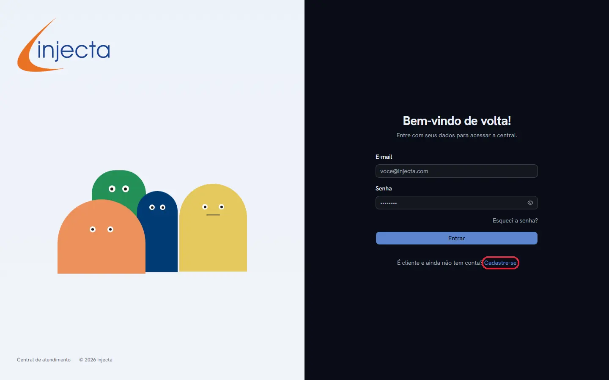
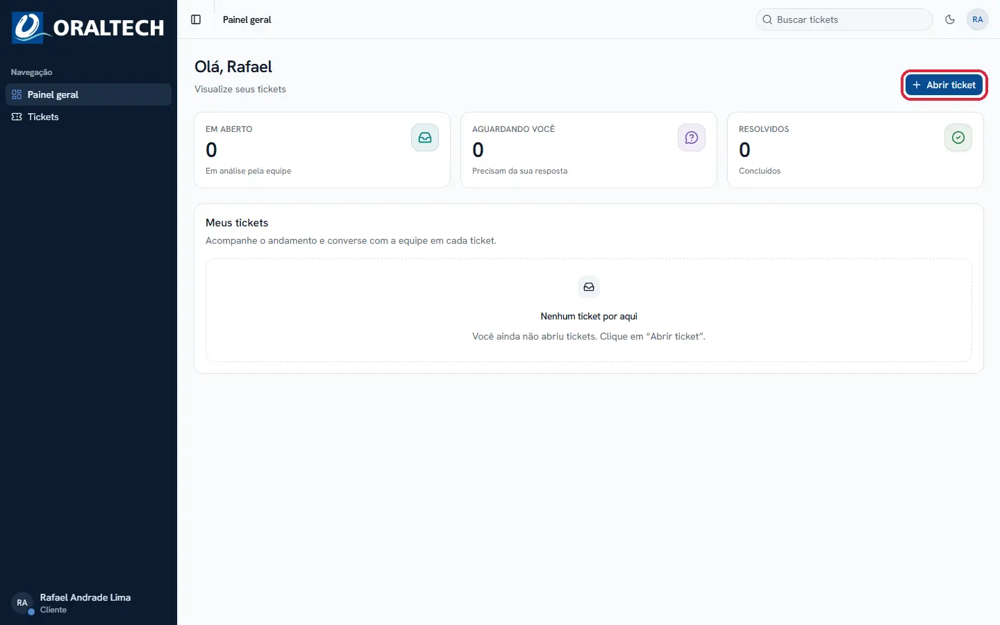
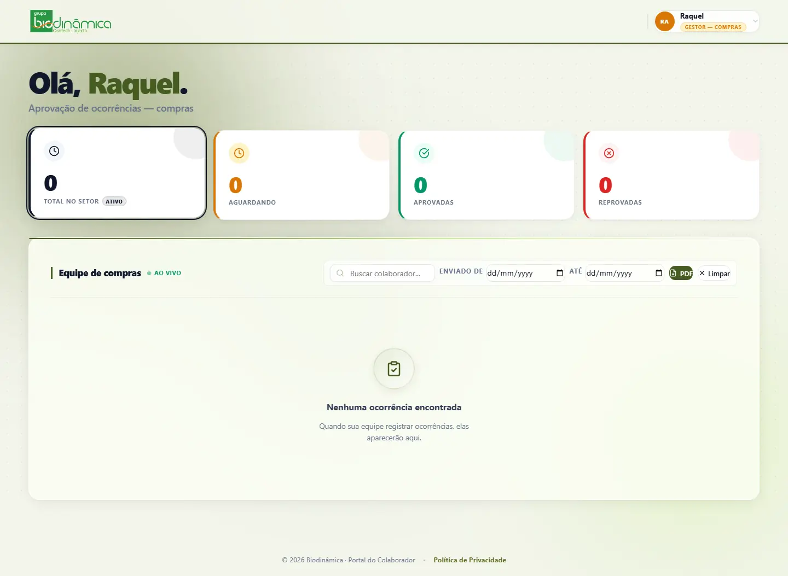
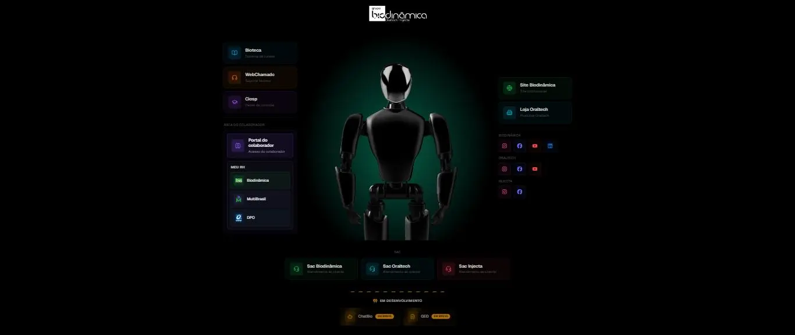
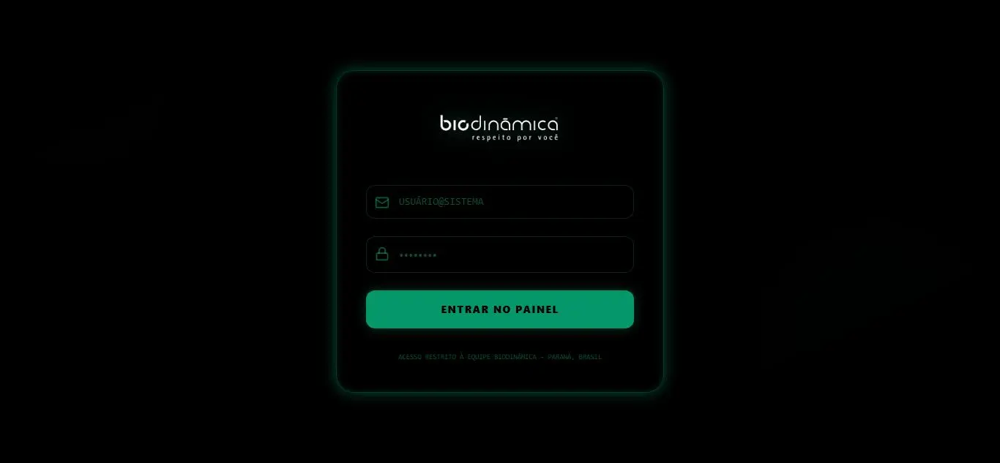

Sistemas
Portais, dashboards e ferramentas internas sob medida: controle de acesso por perfil, aprovações, relatórios automáticos. Pensados pra sua operação, não adaptados de um modelo genérico.
Sistemas · Sites · Automações
Sistemas, sites e automações que a Forja projeta e constrói para o seu negócio rodar sozinho, todos os dias.
O problema
Cada ajuste vira mensagem no grupo do WhatsApp esperando alguém aprovar.
Fora do horário comercial, ninguém responde. O cliente vai pro concorrente.
Toda melhoria pequena depende de achar tempo (ou dinheiro) pra chamar alguém.
Nossa visão
Motor
primeiro.
Site bonito sem sistema por trás é vitrine vazia. O negócio precisa de um motor rodando por trás da tela: cadastro automático, aprovação com fila e dono, atendimento que não depende de ninguém estar online. É isso que forjamos primeiro. O site vem depois, como a porta de entrada desse motor.
Em números
O que construímos
Portais, dashboards e ferramentas internas sob medida: controle de acesso por perfil, aprovações, relatórios automáticos. Pensados pra sua operação, não adaptados de um modelo genérico.
Sites institucionais e comerciais com identidade própria, rápidos e prontos pra campanha, construídos para converter tráfego pago, não só para existir.
Atendimento com IA, respostas automáticas, fluxos que rodam 24 horas por dia, mesmo quando ninguém da equipe está de plantão.
Como isso fica com você
Repositório, domínio e acessos no seu nome desde o primeiro dia. Se um dia quiser trocar de fornecedor, é só levar a chave.
Cada sistema sai com documentação de verdade: não um PDF esquecido, mas o que qualquer desenvolvedor precisa pra continuar depois de nós.
Pedir um ajuste não devia virar um projeto novo. Acompanhamos depois do lançamento pra o sistema crescer junto com o negócio.
Projetos reais, em produção
Role pra ver os seis projetos →Arraste pra ver os seis projetos →
Um único sistema de central de atendimento (SAC), construído uma vez e implantado para as três marcas do Grupo Biodinâmica: Biodinâmica, Injecta e Oraltech. Cada empresa com sua própria identidade visual, seus próprios setores e fila de tickets, rodando sobre a mesma base de código.


Portal interno com dashboards por perfil: colaborador, gestor, RH e administrador. Aprovação de ocorrências em tempo real, relatórios em PDF gerados automaticamente, criação em massa de acessos. O que antes rodava em planilha e e-mail agora tem fila, histórico e dono.

Chatbot institucional com IA generativa e busca semântica na base de conhecimento da empresa. Responde dúvidas de produto 24 horas por dia e escala para um atendente humano quando precisa, sem visitante nenhum esperando resposta.
Projeto autoral para o nicho imobiliário de alto padrão: hero com slider automático, contadores animados, depoimentos em marquee infinito e todo o conteúdo centralizado num único arquivo editável, para qualquer corretora assumir o site sem depender de programador para trocar um texto.
Central única de acesso pra três marcas do grupo: Bioteca, WebChamado, Ciosp, Portal do Colaborador, canais de RH e SAC de cada empresa, tudo organizado num só lugar, com um modelo 3D interativo recebendo o colaborador na entrada.

Painel de controle de dados de acesso restrito à equipe Biodinâmica, construído pra centralizar informação que hoje anda espalhada em planilha, com login próprio e camada de segurança dedicada.

Quem já usa no dia a dia
Tínhamos aprovação travando no grupo do WhatsApp o tempo todo. Hoje cada marca tem fila própria, com histórico completo. Mudou o atendimento das três empresas de uma vez.
Consigo trocar qualquer texto do site sozinha, sem depender de programador pra isso. Só essa parte já valeu o projeto inteiro.
O assistente responde as dúvidas repetidas sozinho e só chama a equipe quando realmente precisa de gente. Sobrou tempo pro que importa.
Como trabalhamos
Entendemos onde o negócio trava: processo manual, atendimento lento, site que não converte.
Desenhamos o sistema antes de desenhar a tela: estrutura de dados, papéis de acesso, fluxo de automação.
Sistema, site e automação sobem juntos, testados com dados reais do seu negócio.
Acompanhamento depois do lançamento. O sistema evolui junto com a empresa.
Pronto pra sair da planilha?
Conversa de 20 minutos, sem compromisso. Se não fizer sentido pro seu negócio, a gente fala isso também.